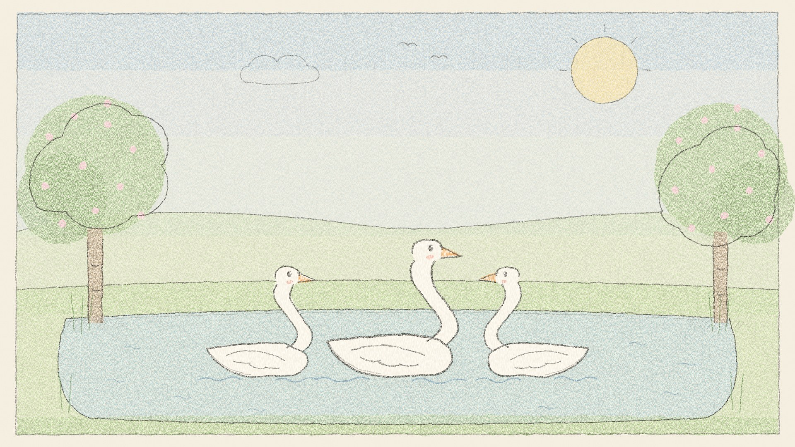

Le Vilain Petit Canard : histoire du soir pour enfants, notre version (d'après Andersen)
Le Vilain Petit Canard d'Andersen, raconté avec nos mots en douce histoire du soir. Un grand caneton gris découvre un matin de printemps qu'il a toujours été un cygne. Dans cet épisode : - Un gros œuf qui ne veut pas éclore - Un chat et une poule qui croient tout savoir - Un long hiver, puis une belle surprise sur l'eau Sources : The Ugly Duckling, Hans Christian Andersen, trad. H. B. Paull (Wikisource) Musique : Kevin MacLeod (incompetech.com), CC BY 4.0 De douces histoires pour le soir et l'heure du conte, racontées lentement par une voix chaleureuse. luongnv.com/podcast/stories
Écouter sur Once Upon a Time Show Télécharger le MP3 Transcription
Également disponible en : English, Tiếng Việt
D’après The Ugly Duckling, de Hans Christian Andersen
Transcription
Narratrice : Bienvenue dans Once Upon a Time Show. C'est l'heure de l'histoire du soir. Bonsoir, mon petit. Glisse-toi bien sous ta couverture, tout au chaud. L'histoire de ce soir vient du Danemark. C'est Hans Christian Andersen qui l'a écrite, il y a très, très longtemps. C'est l'histoire d'un petit oiseau qui ne ressemblait à personne. On l'appelait le vilain petit canard. Tu es prêt ? Alors on commence. Il était une fois, à la campagne, un bel été. Les blés étaient dorés et le foin sentait bon. Près d'une vieille ferme, au bord de la rivière, sous une très grande feuille verte, une maman cane couvait ses œufs.
Un par un, les œufs ont fait crac, crac. Et hop, voilà de petits canetons tout jaunes. Piou, piou ! Mais un œuf ne bougeait pas. C'était le plus gros de tous. Une vieille cane est passée la voir. Ça, c'est un œuf de dinde, a-t-elle dit. Laisse-le donc. Mais la maman cane a répondu : je vais attendre encore un peu. Enfin, le gros œuf s'est ouvert. Il en est sorti un caneton qui criait piou, piou. Il était grand et gris, pas du tout comme les autres. Oh là là, a dit sa maman. Le lendemain, la maman cane est descendue à l'eau. Plouf ! Un par un, les canetons ont sauté. Et le grand caneton gris nageait, lui aussi.
Il nageait vraiment très bien. Regardez-le, a dit sa maman. C'est bien mon enfant. Il n'est pas si vilain, quand on le regarde bien. Puis la maman cane a emmené ses petits dans la basse-cour. Restez près de moi, a-t-elle dit. Saluez bien poliment. Et attention au chat ! La basse-cour était pleine de bruit et de monde. Tout le monde regardait le grand caneton gris. Il est trop grand, disaient-ils. Il est bizarre. On ne veut pas de lui ici. Ils le poussaient, ils se moquaient de lui, et personne ne voulait jouer avec lui. Laissez-le tranquille, a dit sa maman. Il ne fait de mal à personne. Il est gentil, et il nage mieux que les autres. Puis elle lui a caressé le cou et lissé les plumes.
Mais jour après jour, les moqueries continuaient. Le pauvre caneton était très triste. Alors un jour, il s'est envolé par-dessus la barrière. Le caneton a volé loin, très loin, jusqu'à un grand marais plein de hauts roseaux. Des canards sauvages vivaient là. Mais quelle sorte de canard es-tu ? lui ont-ils demandé. Le caneton a été très poli. Tout ce qu'il voulait, c'était un coin tranquille dans les roseaux. Deux jeunes oies sauvages sont arrivées. Elles étaient effrontées et bavardes. Viens avec nous, l'ami, ont-elles dit. Mais soudain, il y a eu de grands bruits et des chiens qui aboyaient partout.
Les oies sont parties à tire-d'aile. Le caneton s'est caché dans les roseaux jusqu'à ce que tout redevienne calme. Puis il s'est éloigné tout doucement. Le soir venu, il est arrivé devant une petite maison. Une vieille dame vivait là, avec un chat et une poule. Oh, la belle cane bien dodue, a dit la vieille dame. Je vais avoir des œufs de cane ! Alors le caneton est resté. Il a attendu trois semaines entières. Mais bien sûr, il n'a pondu aucun œuf. Le chat était le maître de la maison, et la poule en était la maîtresse. Ils croyaient tout savoir. Sais-tu pondre des œufs ? a demandé la poule. Non, a dit le caneton.
Sais-tu ronronner ? a demandé le chat. Non, a dit le caneton. Alors tais-toi, ont-ils dit, et va t'asseoir dans le coin. Le caneton s'est assis dans le coin, un peu seul. Mais moi, j'aime nager, a-t-il dit. J'aime sentir l'eau fraîche, et plonger tout au fond. Nager ? a dit la poule. Quelle drôle d'idée ! Vous ne me comprenez pas, a dit le caneton. Je crois que je vais repartir dans le vaste monde. Eh bien, vas-y, a dit la poule. Et il est reparti. Le caneton a trouvé un étang où il pouvait nager et plonger. Bientôt, l'automne est arrivé. Les feuilles sont devenues orange et dorées, et le vent les faisait tourbillonner.
Un soir, au coucher du soleil, un groupe d'oiseaux a survolé l'étang. C'étaient des cygnes, blancs comme la neige, avec un long cou gracieux. Ils partaient vers les pays chauds. Puis l'hiver est venu, et il faisait très froid. Une nuit, l'étang a gelé, et le caneton est resté pris dans la glace. Au petit matin, un gentil paysan l'a vu. Le paysan a cassé la glace avec son sabot de bois, et il a emporté le caneton chez lui, bien au chaud. Les enfants du paysan voulaient jouer. Mais le caneton avait peur, et il battait des ailes dans tous les sens. Plouf, dans le lait ! Pouf, dans la farine ! Quel désordre !
Alors il s'est glissé dehors par la porte, et il s'est caché dans les buissons, pendant tout le long hiver. Enfin, le soleil est redevenu doux. Les oiseaux se sont remis à chanter. C'était le printemps ! Le caneton a étiré ses ailes. Elles étaient grandes et fortes. Il les a battues, et hop, il s'est envolé, haut dans le ciel. Il a volé, volé, jusqu'à un joli jardin. Les pommiers étaient couverts de fleurs roses. Sur l'eau, en bas, trois cygnes blancs glissaient doucement. Je vais aller les voir, s'est-il dit. Il a nagé vers eux, tout timide. Il a baissé la tête, tout près de l'eau. Et qu'a-t-il vu ? Il s'est vu lui-même, dans l'eau claire comme un miroir.
Ce n'était plus un caneton gris. Il avait de longues plumes blanches et un long cou gracieux. C'était un cygne ! Il avait toujours été un cygne. Les autres cygnes ont nagé autour de lui. Ils lui ont caressé le cou avec leur bec, pour dire bienvenue. Des enfants sont venus avec du pain et des gâteaux. Regardez, a crié le plus petit. Il y a un nouveau cygne ! C'est le plus beau de tous ! Le nouveau cygne s'est senti tout timide, et il a caché sa tête sous son aile. Il était très heureux, mais pas fier du tout. Il a gonflé ses plumes et levé son long cou. Je n'avais jamais rêvé d'un tel bonheur, a-t-il dit, quand j'étais le vilain petit canard.
Et maintenant, le jardin est tout calme. Le soleil est couché, et les étoiles s'allument une à une. Les cygnes flottent sur l'eau tranquille. Le jeune cygne cache sa tête sous son aile toute douce. Il est avec ses amis, maintenant. Il est à l'abri, bien au chaud. Chut, murmure l'eau, chut. Fais dodo. Ferme les yeux, mon petit. Comme le cygne, tu es merveilleux, tel que tu es. Bonne nuit de la part de Once Upon a Time Show. Fais de beaux rêves.